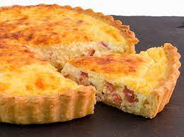

Quinche de bacon y jamon York
Receta de quinche de bacon y jamon de york

Ingredientes
Masa
Mantequilla
Bacon
Jamon York
Elaboracion (Pasos)
Preparar la masa.
Preparar el bacon y jamon york en trocitos
Mezclar todo en un bol
Calentar en el horno.
Index